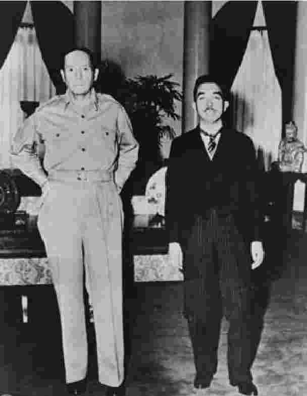
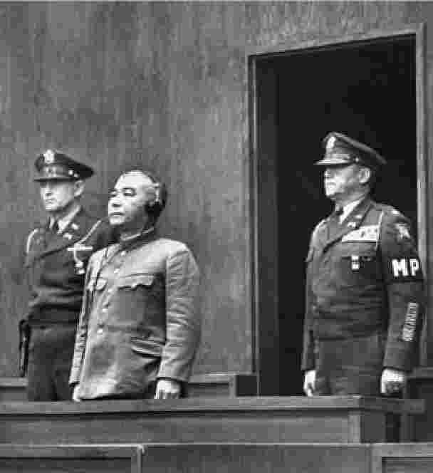
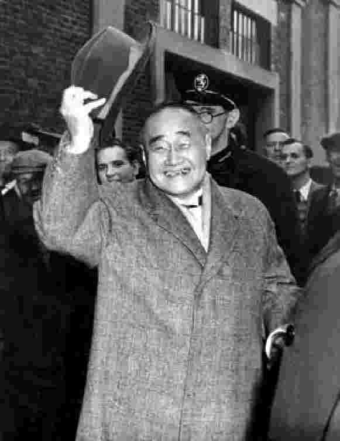
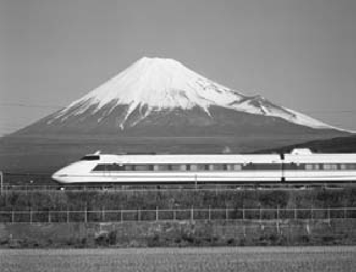
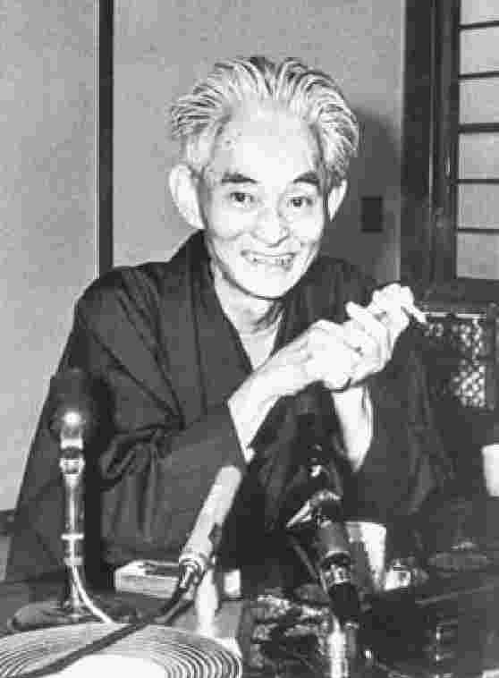
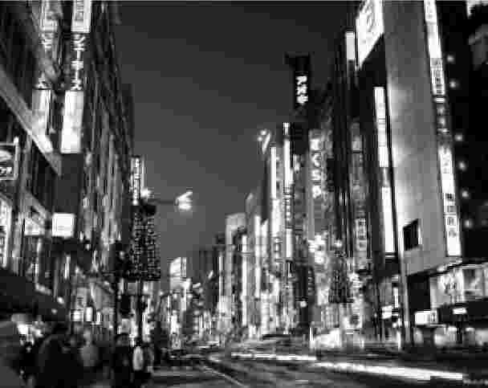

1945年8月15日，天皇裕仁初次对日本人民发表广播演说，呼吁人们“忍其所难忍，堪其所难堪” [1] 。不可战胜的神圣日本帝国已被打败，尽管付出了牺牲和劳苦、忍受了苦难，日本最终还是失败了。以令人惊讶的高音，使用许多日本人并不能懂的古老日语，天皇为“世界大势亦不利于我”的事实而道歉。他向日本人，也向日本在东亚的盟友（依旧执著于“共荣圈”的华丽词藻）表达他的遗憾。裕仁接着呼吁日本忍受 那些必将到来的变化，以保日本“不致落后于世界之进化”，仿佛即将发生的改革只是确保“国体之精华”存续的手段——裕仁话音上的这一有趣转折在此后的数十年间引来史家和论者众议纷纷。明治时期的维新者们曾呼吁“和魂洋才”（日本精神和西方科技），这是一种既欲实现日本现代化，又欲保留日本精华的策略；裕仁似乎是在以大体相同的方式，提议将上述策略同样运用至战后时期。
对于战败的消息，人们的反应各不相同。一方面自然是存在不理解和绝望：本土人民经历了那么多，又被灌输了那么多帝国军队的荣光，可永恒的帝国如何竟会败给颓废且道德失范的西方？对一些人而言，绝望不知不觉化为了耻感，大约有350名军官因自感护土不力而自杀。另一方面，又存在某种害怕和恐惧，因为人们被告知，美国人是怪物，会劫掠土地、强奸妇女。那些位高权重之人恐惧尤甚，各种记录和可致人罪的文书被付之一炬，火光照亮了8月15日的夜晚。但在许多日本人看来，敌对状态的终结和美军抵达的景象带来了某种安慰乃至希望：这场战争是可怕的磨难，也许变革的时候到了。
占领的现实设法满足了每个人的期望。日本人在某种程度上感到羞耻，事实上，日本政府所做的第一件事是开设“慰安所”（也就是妓院）来服务美国兵。美国占领者很快便开始乐享这一慷慨的供给，尽管1946年1月他们最终禁止了这类国家赞助的“慰安所”，因为此类机构侵犯妇女人权（卖淫则仍然合法）。存在着一定程度的饥馑和苦难，因为日本人业已耗完食物和补给，本土经济颓然崩溃，仿佛张力刚刚被释放一样。营养充足的美国人成了残酷的参照，一些主要城市的中心区域弥漫着沮丧所致的阴郁氛围。然而与此同时，占领也给企业家带来了机会——得享机会的除了皮条客和娼妓，还有翻译人员和各行业的商人。最后，很快便可看出，驻日盟军总司令、美国将军道格拉斯·麦克阿瑟对于日本的重建确有宏伟规划，每个人都能获得新机会。
尽管对日占领理论上应是多边事务、应受远东委员会（成员包括澳大利亚、英国、加拿大、中国、法国、印度、菲律宾和荷兰）的监管，实际上却从一开始就是美国的独角戏。苏联曾要求参与盟军对日管制委员会，但委员会在1946年2月才召开第一次会议，而那时麦克阿瑟已经在日本作出了实质性的改革。美国政府非常强硬，要在战后国际秩序中将新日本控制在美国的影响范围之内。
尽管麦克阿瑟享有操控方面的巨大自由，他还是选择了扮演间接角色的策略，以令他的影响力最大化。尤其当他意识到政府机关的象征价值时，他马上决定，天皇应得到保护和保留。事实上，他的思虑与日本历史上那些老生常谈如出一辙，担心废黜天皇可能导致日本民众变得难以管理。此外，纯因实际和语言上的原因，麦克阿瑟不得不依靠日本口译和笔译译员来完成工作。因此，这位盟军总司令雇用了一批双语政治技术人员，负责他的盟军总司令部和同样获得保留的日本政府之间的沟通工作。结果，日本当局感受到了自身的存续和对决策过程的参与（在某种程度上也是事实），这有助于麦克阿瑟促成他的改革，但也导致一部分战时和战前的日本官僚机构得以苟存。
麦克阿瑟的改革计划雄心勃勃。他认为战时日本饱受过度中央集权、军国主义及法西斯主义之苦，因此在制订计划时，遵循两个相互联系的“日本问题解决办法”，即非军事化和民主化。
最简单的办法最先实施：麦克阿瑟立即解散日本国内外的所有军队，这意味着有700万人被遣返回日本。他撤废“特别高等警察”（所谓的“思想警察”）——这些警察曾在战时监视政治犯和持异见的知识分子，而后启动了属于他自己的对政治威胁的整肃（从政府、官僚机构和商界赶走了20万人）。虽然麦克阿瑟不把天皇其人视为问题，但为了打消对天皇的狂热崇拜，总司令实行政教分离、废除了国家神道教，并强制天皇公开否认其神格。

图9 裕仁和麦克阿瑟，1945年
非军事化运动的大幕以远东国际军事法庭（又称东京审判）的形式拉开，法庭自1946年5月至1948年11月开设。东京审判本欲在地位上等同于在德进行的纽伦堡审判，却存在巨大争议，常有人说审判只体现“胜者的正义”；的确，东京审判中处死的战犯远较纽伦堡为多，一些高级军官获死刑，更多地是因为“阴谋策动战争”这一前所未见的罪行，而非战争罪行本身。最引人注目的案例就是东条英机，他因战争罪行和阴谋策动战争获罪，并被处以绞刑。然而，这些审判中最突出的问题恐怕是麦克阿瑟将天皇列在受审范围之外。在战后许多日本知识分子——例如政治理论家丸山真男——看来，对于麦克阿瑟的第二大雄心即日本的民主化而言，未令天皇直面责任是有害的，因为这开了危险的先例，破坏了政治主体的观念，而这一观念正是民主意识的根本。
麦克阿瑟认识到，军国主义和垄断经济之间显然存在关联，因此，作为民主化的第一步，他推出了打破经济垄断的措施。他实行了一系列农地改革，强制地主售卖所有土地资产，仅准许他们保留一块地。这使劳动者获得自己耕种过的土地的所有权。不过，经济民主化的样板要数瓦解财阀集团企业的计划，麦克阿瑟认为财阀同日本帝国主义有关。
总司令相信，这些财阀企业精心导演了日本殖民地的战争经济。然而最终，瓦解财阀的工作并未彻底完成。许多家族把持的企业被解散，银行取而代之，但原有的企业网络很快又围绕银行建立起来。其结果是产生了同财阀有相似之处的企业，这种企业后被称为系列（keiretsu） [2] 。日本商业中最著名的名字——三菱、三井、富士、住友、日产——都存续到了战后。
在推进民主的社会和政治措施方面，总司令立即公告称，将会保护日本公民的自然权利和自由。在日本历史上，妇女和少数群体的平等权利首次得到承认。

图10 控诉战争罪行的东京审判
公告赋予工人组织工会和罢工的权利。为了促进思想自由，总司令引入了教育改革（尤其是撤掉了“伦理”课，在战时，课上讲授的是《国体之本义》），延长义务教育年限（至九年），驱逐了政治倾向有问题的教授。此外，虽然总司令自己也实行审查制度，但他宣称（日本人的）审查制度为非法，同时还宣告大赦政治犯，这事实上意味着释放亲共人士。
在政治领域，总司令鼓励新政党的发展，尽管这实际上促成了战时政党的改头换面。连续性再次藏身改革之中。立宪政友会化身自由党（今日自由民主党的前身），而立宪民政党则变身为进步党。经过一系列密谋（其中还有美国中央情报局的暗中支持），1946年，吉田茂作为自由党总裁，成为战后第一任首相。事实上，亲美的吉田在此后的八年间断断续续地当着首相。
不过，民主化运动的最大成就要数1946年11月颁布（1947年5月生效）的全新宪法。麦克阿瑟原本认为，日本人应该在宪法的起草上起主要作用，这很重要。1945年10月，总司令任命法学家松本烝治组建委员会，在当年12月之前（也就是在有苏联参加的远东委员会召开第一次会议之前）重新起草宪法。所谓的松本委员会为新日本提出了一系列建议，包括增加日本人民的权利（和义务）。然而，松本的报告书建议让天皇保留主权（固然也建议应劝说天皇不要经常运用权力），认为经选举产生的官员和大臣应向天皇提供参考意见。麦克阿瑟感到松本的报告书完全不可接受，便立即任命了盟军总司令部民政局局长、美国人科特尼·惠特尼来起草更合适的方案。日本政府以为后来呈给他们的文书就是定稿——部分是由于对文书性质的这一误解，惠特尼的草案最终几乎未经日本人修改，就在1947年获得通过、成为法律。
1947年的《日本国宪法》名义上由天皇作为明治宪法的修正案颁布，这部宪法将天皇转化为“日本国民统一的象征”，并把主权交到国民手中。它以美国《权利法案》的模式承认人权，并建立了遵循威斯敏斯特模式的两院制议会。宪法引发争议的第九条还禁止日本发展陆军、海军或任何其他形式的“战争力量”。60多年后的今天，1947年宪法一枝独秀，在世界上生效后未经修订的宪法中，它的寿命最长。
然而，接近1947年底时，占领军的政策发生了突兀的变化。欧洲落下铁幕 [3] ，国际环境随之改变，中国国内的民族主义势力开始失势。在华盛顿看来，苏联在意识形态和领土方面的野心昭然若揭，这令麦克阿瑟对日本国内逐渐活跃的劳工运动和政治左派的成长心怀戒备。总司令自己曾在战后大赦中释放了许多起领导作用的共产主义者，并已在1945年宣布日本共产党为合法。在1946年举行的战后第一次选举中，新成立的日本社会党收获92个议席（占总投票数的18%），至1947年，则飙升至143个议席（占28%）。这样，到了1947年底，总司令开始意识到，战后日本的危险因素已不再是法西斯主义的复活，反倒是共产主义的崛起；他在目标上作出巨大逆转，以迎接这一新的挑战。
1947年初，目标转变的早期征兆已经显现，这种转变后被称为“逆流”。当时有一个工会联盟（共有超过200万名工人）想要运用他们的新权利组织一场总罢工。罢工原定于2月1日进行，但总司令在最后一刻介入，于1月31日晚禁止了这场罢工。在许多评论人士看来，这一步严重挫伤了日本初生的劳工运动，此后工会成员人数锐减（一度有超过50%的工人加入工会，到了1960年代，仅有不超过25%的工人加入）。工会成员人数至今仍处低位，大多数组织如今只是小规模的“企业工会”。
很快，麦克阿瑟的计划就从非军事化和民主化转向了再军事化和经济稳定化。此时，美国希望在全球与共产主义的对抗中，日本能成为其在太平洋地区的盟友。于是总司令主导了一场“整肃赤色分子”的运动，从政治和商业岗位上开除了13000人，口实是整肃对象“阻挠占领目标的实现”，而此前整肃政治右翼时也是以此为理由。逆流整肃有时一如字面所示，导致了原有战时职位任命的复辟。与此同时，麦克阿瑟放弃了对抗财阀的运动，因为这一运动耗时远超预期，并且严重损害经济。最后，总司令在1950年推动日本政府建立自己的准军事性国家警察预备队，这支队伍最终将为更具实质性的军事力量奠定基础——1952年，队伍变身国家保安队，而后自卫队在1954年成立，日本陆海空军至今仍沿用其名称。对于这些军事力量是否违背1947年《日本国宪法》第九条（军事力量的存续是否与宪法相抵触），至今仍存有激烈争议。
占领军面临的最后一个问题是日本经济的整体健康。1945年至1949年之间，通货膨胀如脱缰野马，严重损害经济和政治的稳定，华盛顿因此担忧，日本人民会由此投向共产主义的怀抱。资本主义阵营首先应当以繁荣来抵挡共产主义——“渐增的富裕”将会抑制共产主义在亚洲的传播。美国政府的解决方案是召来底特律银行家、汽车高管约瑟夫·道奇，令其重整经济，试图让日本恢复生机。所谓的“道奇路线”基本上是一种紧缩政策，该路线大幅削减公共支出（废止国家补助和国债，裁减超过10万名公职人员），放松对外汇的监管，并将日元对美元的汇率固定在极好的比率（360:1）以促进出口。在这一汇率下，日元币值被日益低估，固定汇率一直保持到1970年代。
虽然道奇路线成功控制了通胀，但有种种迹象表明，它将彻底弄垮日本。而后，吉田首相在1950年收获“天赐良机”——朝鲜战争。20亿美元的军需采购成了“天降的甘霖”（在其后的三年中占据日本出口额的60%），出口增至原先的三倍，产量提升超过70%，日本的国民生产总值每年以12%的速率增长。
是朝鲜战争带来的战时景气——而非道奇路线——为日本在其后20年间显著的（甚至是奇迹般的）经济增长打下了基础。在战争初期，日本的国民生产总值仅为110亿美元。至1950年代中期，该数字已增长250%。至1970年代初，日本的国民生产总值超过了3000亿，从而成为世界第三大经济体（仅次于美国和苏联）。

图11 前首相吉田茂
事实上，日本突如其来而又意义深远的经济增长，加上1947年颁布的《日本国宪法》和其军事力量的发端，意味着占领已近尾声，而这远比人们预料的快。1951年9月，48个国家的代表在美国旧金山同日本签订了正式和约 [4] ；1952年4月，持续仅七年的占领宣告结束。为加速这一进程，美国与它在亚太地区的其他关键盟友分别签订了防卫协议，并约定这些日本的亚洲近邻日后仍可与日本另行协商赔偿协议。在美国政府看来，重要的是尽早结束开销巨大的占领，并使日本在亚洲正处白热状态的冷战中成为美国的关键盟友。为此，仅在数个小时之后，日本就同美国签订了《日美安保条约》，这一条约至今仍将美国同日本的防卫绑定在一起。
由于种种原因，《旧金山和约》引发了争议。包括英国在内的许多国家抱怨和约对日本不够严厉，认为至少应当为日本帝国主义的受害者们设定赔偿。在苏联和其欧洲伙伴看来，占领结束后仍在日本保留美国驻军的条款尤其令人不快，这些国家拒绝签署和约。最后，中国甚至未曾获邀与会。日本国内对于和约条款也是五味杂陈。一方面，日本人为主权的恢复而感到喜悦和放松，但主权似乎并不完整，因为美国将会在日本保留军事基地，还会在一段时期内（实际持续至1972年）保持对冲绳岛的控制。此外，《日美安保条约》好似一柄双刃剑，它虽然向军事上较为脆弱的日本提供了一定程度的保护，但同时也令日本卷入美国的外交政策，可能将日本拖入美国面临的其他矛盾冲突。在其后的数十年中，这一和约的复杂性将会如阴魂般缠住日本的外交政策。
日本社会在战后初期经历了惊人的变革，恐怕唯有明治早期之变才能在规模上与之相提并论。事实上，认同问题是个现实且至关重要的问题，在日本于19世纪进入现代世界时如此，面对建立在二战废墟之上的新世界秩序时也是如此。许多主题如出一辙：日本处在赤贫之中，曾经受西方列强摆布，而今则受美国这一超级大国掌控；传统遭到破坏，被动接受一种允诺巨大财富和力量的新生活方式。这些并行之处对每个人都有影响。在一些人看来，战时政权终结了，和平、民主的宪法诞生了，这意味着与过去诀别、塑造新日本的契机。大多数人则在努力适应已经发生的、已经失去的和或将得到的，延续过去和变革现状的急务构成了复杂的网络。选择未来的权利似乎掌握在民众手中，这在日本属于史无前例。1950年代和1960年代出现了经济奇迹，但这数十年却在文化和政治方面动荡不安。
人民中的大多数迈出了很实际的一步——不考虑结果，投身工业、重建他们的国家。在1950年代早期，日本政府试图以第一次“产业合理化”浪潮来启动建设进程，瞄准钢、铁及煤矿开采这样的核心工业。获得近7500亿日元投入的金属行业急剧发展。一度遭到破坏的钢铁工业也受益于惊人的增长，至1959年，战后日本这一行业的盈利水平已位列世界第二（仅次于美国）；这种增长既是得益于在朝美军的巨大需求，也是得益于不断从欧美涌入的新技术。由于日本不必为研发投资（现成的技术可以从外面买来），故而增长很快。
金属行业的增长带动了其他产业，例如造船和（其后的）汽车工业。日本在造船方面已有经验（日本造船业规模在1935年位列世界第三），但它的资源在战争中被毁。同样，日本能够迅速构建新的造船能力，部分是因为迎合朝鲜战争带来的需求，部分是因为新技术的涌入。至1960年，日本已拥有世界上最大规模的造船业。至1975年，全世界将近50%的新船都是日本制造。
许多日本汽车制造巨头都在朝鲜战争带来的繁荣中起家：日产、丰田和五十铃都为美军造车，美国提供设计，但制造是在日本。这不仅为汽车工业带来了惊人的增长，而且向日本制造商提供了免费的技术转让——1960年代高增长的关键正在于此。1960年代初期之前，日本国内并未真正形成对汽车的需求，因为人均收入仍然处于低位：1956年，日本仅仅为国内消费生产了10万辆汽车；至1963年，这一数字达到100万；到了1960年代后期，则是接近400万。至1967年，日本已成世界第二大汽车制造国。
从经济繁荣中获益的不仅是重工业，不断增加的国民财富在其他领域还触发了连锁反应——作为消费社会的日本由此诞生。日立、松下等厂商开始制造洗衣机、电视机和冰箱，1950年代后期，这些产品的产量至少各自增长了8倍。1956年只有1%的家庭拥有电视机，至1960年，拥有率已超过50%。
说到区别，同样是快速增长，1960年代的增长要更快一些。池田勇人首相著名的“收入倍增计划”于1960年开始运作，这一计划希望在10年间令日本的国民财富翻番。这一空前的、野心勃勃的计划事实上低估了日本经济的膨胀速度——1971年的国民生产总值是1960年的三倍，这意味着12.1%的年均增长率。至1960年代末期，日本消除了之前一直间歇性拖累增长的国际收支逆差。
然而，那些喜欢谈论“经济奇迹”的人应该记得，在1950年至1970年间，所有工业经济体都经历了快速的增长。日本的增长本身并不特殊，只是速率（年均超过10%）确实出挑。大多数评论人士将这一“奇迹”归功于一些极其寻常的因素：道奇路线将日元对美元汇率固定在360∶1，并且被人为限制在同一水平的汇率持续至1971年，因此日元被日益低估，这就刺激了出口；像其他西方国家一样，日本受益于建立在布雷顿森林体系 [5] 和关贸总协定基础上的自由贸易新制度；与其他西方国家不同的是，日本不必将大量预算花在军费上，因为它始终受《日美安保条约》的保护；作为发达经济体中的后来者，在自由贸易制度中，日本可以购入新技术，而不必花费时间和金钱去开发技术；人口快速增长，与此同时，教育体制惊人扩展。也许日本的增长中最受热议的“独特”因素要数官僚制度和经济管理的作用。有充分的理由认为，通过发出正式的和非正式的行政指导（gyôsei shidô），通商产业省和其他部门（尤其是财务省）在日本的快速增长中起到了主导作用。不过，一个简单的因素不应被忽略，那就是日本人民自身的艰苦劳作、勤勉和创业精神。“日本人工作过于努力”这样的玩笑话在现实中有着坚实的基础：日本工薪阶层的平均工作时间如此之长，以至于若把总时数相加，则他们每年要比欧洲同一阶层的人群多工作整整12周。对于雇员的奉献，日本的大公司报以“终身雇佣制”。
如此快速的增长给日本人民带来了诸多好处：新的中产阶级迅速形成，他们抱着共同的价值观和愿景，居所越来越趋向市郊，借助遍布的道路和广大的铁路网上下班。标志性的新干线（子弹头列车）早在1964年就已投入使用，它以空前的便利和速度连接起东京和大阪这两个重要商业城市。同样是在1964年，东京还自豪地举办了奥林匹克运动会——这意味着日本不仅已经重回国际社会，而且还是富足的、值得尊敬的一员。1950年代，消费者津津乐道家庭生活的“三件宝”（电视、冰箱和洗衣机）；至1960年代，出现了新“三件宝”（空调、汽车和彩色电视机）。
1960年代之前，在扩大后的教育体制中就学前所未有地成为了精英的象征。靠社会地位或金钱手段进入一流公立大学（前“帝国”大学）的时代已一去不返；最好的大学的入学名额分配几乎完全与日本全国人口分布相匹配，这在日本历史上（或许在世界历史上）可算史无前例，充分证明全国各地的中小学分布广泛、入学容易、教学质量均一。这一成就的副作用则是，需通过令人难以想象的激烈竞争，才能进入最好的大学；围绕东京大学入学名额的竞争尤为（且至今仍然）惨烈。备考大学的学生每天学习的小时数甚至比他们那勤勉努力的“工薪阶层”父亲工作的时数更多，许多（经济上有条件的）学生则到特殊的义塾（补习班）上课，以尽可能地增加自己考入心仪学校的机会。
尽管考入大学一事具有精英性质（或许正因如此），进入合适的大学对学生的职业前途而言仍然极其重要。东京大学法律系的毕业生被认为是其同辈中最为出类拔萃的少数，她们将有机会选择政府或大企业的顶级职位。这种“考试地狱”令日本中学中的自杀率在世界范围内处于高位，那些家庭收入较高的学生则从昂贵的义塾体系那里重新获得了优势。
教育领域的巨大成绩伴随着严重的社会问题，快速的经济发展同样在其他方面展露远为黑暗的一面。尽管女性在法律上已同男性平等，她们在社会中仍然从事有别于男性的工作。战时，女性曾为了菲薄的报酬在纺织工厂里劳作；战后，她们又成了电子产品工厂的主要劳动力。

图12 新干线子弹头列车
那些在办公室上班的女性常从事助理工作，并且一旦结婚雇主就希望她们辞职，直到1966年高等裁判所作出“结婚辞职制”违宪的裁决。性别政治进程缓慢。少数族裔（尤其是战后居住在日本的54万韩国人）和社会少数群体（尤其是部落民）继续遭受社会歧视，这成了“跨战争” [6] 的现象。尽管法律保护这些群体，但社会的一些部分依旧“下有对策”。
经济成就的代价还包括严重的环境危害和污染。由于扩张的城市占据了海岸附近稀少的平地（日本有约80%的土地因多山而难以开发），森林被挤入了山间。重工业的发展带来了总量巨大、缺乏监管的化学废渣，污染了河流和土地。早在1950年代，人们就在控诉汞中毒和镉中毒，前者后来以发病地区命名，被称为水俣病，后者则因症状得名骨痛病（itai-itai-byô，日文意为“痛痛病”）。然而直到1970年代早期，原告经历的痛苦始得承认和赔偿，恰当的环境法规始得施行。此后，由于经济趋于稳定、挺过了1970年代的石油危机，日本逐渐成为世界上主导环境保护的国家之一。
伴随着日本社会物质条件的迅速变化，人与文化也发生了变化。1950年代早期，在漫长战争年代出生的那一代人成长为青年。他们深受美国占领经历的影响，美国文化如传染病一般在他们中间迅速蔓延。不仅如此，一些对于日本传统的美国式轻蔑似乎也转移到了他们身上。全世界的青年文化都是叛逆的，1950年代的日本青年比其他大多数青年拥有更多反叛的理由。
日本帝国海军偷袭珍珠港事件才过去14年，一场被称为太阳族（taiyô-zoku）的青年运动已在日本兴起。运动的英雄是24岁的名人、花花公子石原慎太郎，他1955年创作的小说《太阳的季节》为同辈青年定下了基调。小说讲述了一对兄弟共有一名女友的故事，取得了极大成功——收获了颇有声望的芥川奖，同时还成了一种流行现象。仅仅一年之后，小说被改编成了同名电影。其他小说和电影纷纷迅速跟进，都表现同一类主题：太阳族追求反成规的（有时不过是无意义的）暴力，在道德上玩世不恭，推崇单纯的残暴、愤世嫉俗和放纵。石原本人成了偶像，似乎活在他的小说和电影描绘的生活之中。与伦敦的“泰迪男孩运动” [7] 一样，太阳族形成了一种服饰风格：城市男性留着“慎太郎”发型，穿夏威夷式的运动衫、宽松的拜伦式衬衫、飞行服和山羊皮鞋；女性则留染成红色的披头士式发型，穿斗牛士裤。石原后来在1999年当选东京都知事，至今仍是争议人物。
太阳族运动反映了日本社会中更宏观的潮流。在流行文化摆向右翼时，它以（文化和身体）暴力的形式出现，是一种张力的释放。1950年代是日本电影的黄金时代，随着占领及审查法令的终结，许多电影开始以显而易见的反美态度重新审视战争中的事件。其中较早出现的作品有1953年的《姬百合之塔》，描绘冲绳的年轻女孩为避免成为美军俘虏而自杀。小林正树导演的《厚墙壁的房间》也于同年 [8] 问世，该片让人想到美军在战争中的品行正如日军一样恶劣，还暗指许多军官在东京审判中受到的惩罚不公正。仅仅在一年之后，著名的怪兽大片《哥斯拉》上映，讲述原子弹爆炸如何可能导致不可预计的后果，把巨大的怪兽带到世上。1950年代有数十部电影问世，这些影片描述战时日本士兵的表现，描述日本黑帮如何保有日本传统的“荣誉感”和“勇武”精神，描绘武士，描绘怪兽。
政界中人并非没有察觉到这一公众舆论的转向。后来成为首相的岸信介在1950年代中期提出了民族主义的逆流（gyaku kôsu），这个词是刻意讽刺麦克阿瑟那著名的“逆流”。事实上，岸作为二战甲级战犯，一直被关押到1948年，但美国中央情报局在1955年同他接触，要他协助将日本政界的保守阵营统合为强大的、单一的政党，以确保发展中的社会主义运动不能成功。其结果便是自由民主党于1955年11月成立，永久性地改变了日本的政治版图，开始了所谓的“55年体制”；自民党在其后的38年间都连续执政。该党与前财阀及长久存在的官僚层保持密切接触，形成了所谓的“铁三角”，按独特的跨战争模式运作。1957年，岸信介成了首相，此时距离美军结束占领（和禁止岸担任公职的法律禁令到期）才五年。
岸在意识形态方面的立场十分清晰。他呼吁修订1947年宪法（认为是占领军将这部宪法强加在不情不愿的日本身上），以允许日本重新武装并宣布天皇为国家元首。岸提倡，即便没有可能修改宪法，也要对宪法条文进行灵活的解释——他建议恢复使用太阳旗、不再禁止战前国歌《君之代》，认为神道教和传统日本伦理应当在日本人的生活中占据更为中心的位置，还认为日本应当扮演更为独立的国际角色（同时保持与美国的特殊关系）。
岸未能令上述所有举措在国会获得通过，他的许多政策（例如1958年的《警察官职务执行法》修正案）受到媒体、学生乃至自民党内的猛烈抨击。日本共产党抵制对修正案的讨论、试图在国会议院会场门前设路障，而自民党中的自由派（由前首相吉田茂及后来成为首相的池田勇人和佐藤荣作领导，池田和佐藤在1960年至1972年间先后作为首相施政）则威胁退党。
然而，对于《警察官职务执行法》的狂怒还只是战后日本历史上最大政治危机的前奏，这场危机被称为“1960年安保斗争”。《日美安保条约》适逢续订，岸企图修改条款，导致危机爆发。早在1958年，岸就开始试图让公众相信：日本需要美国来提供安全保障，但是日本应该在条约的条款中寻求更平等的地位，这也就意味着日本要在自身军事防卫上承担更多责任。然而，很大一部分公众不认同上述两项主张，认为这两项主张都违反和平宪法——一个反对联盟成立了国民会议（Ampo jôkai）（日本阻止修改宪法国民会议）。尽管如此，岸还是一意孤行，于1960年1月飞赴华盛顿以签署修订后的条约。同年2月，条约被提交众议院，但门外有众多不同团体发起的抗议集会，反对党则拖延和阻扰条约通过，这些因素令讨论无法进行。5月19日是议会会期的最后一天，反对党为了阻止对条约的讨论，绑架并关押了众议院议长，但岸召来警察放出了议长。他进而将反对派赶出会场，在仅有一部分自民党议员在场的情况下，自行批准了条约，时为19日午夜。
其后的一个月中，街头每天都有抗议活动。6月4日，550万人罢工以示反对条约。6月10日，白宫新闻发言人访问日本，为艾森豪威尔总统计划中九天后的访日作准备。发言人乘坐的车受到示威者的袭击，不得不转乘直升机脱险；据传岸召集黑帮成员去控制学生。6月15日，条约递到参议院，此时发生了一场总罢工，10万名示威者在议院外与警察和黑帮成员作斗争。6月17日，主要报纸发表联合社论；文章警告说，不仅和平主义处在危急关头，民主本身也有倾覆之虞。社论呼应了一些富有影响力的公共知识分子持有的见解，例如在清水几太郎 [9] 看来，安保斗争意味着战后日本的民主之死。6月19日，条约在参议院自动获得通过，但艾森豪威尔取消了访日计划。在接下来的数周中，岸躲过了一次刺杀，但还是辞去了首相职位，更为平和、较少争议的池田勇人随后接任。
池田以“收入倍增计划”和被夏尔·戴高乐称为“晶体管销售员”而闻名，他无疑是战后日本历史上最为重要的首相之一。也许他最大的成就在于，以“忍耐与和解的政治”，将日本人民成功地团结到经济增长计划中去。在池田任内，日本军事角色的问题被边缘化，社会尽全力和平致富。
然而，人不能仅靠物质富裕过活，这一点在后来的1980年代逐渐凸显；经历了1950年代的戏剧性事件，经历了十年前的太阳族运动，日本的国家认同问题再次被提上了日程。此时，著名小说家川端康成的作品很好地反映了日本的情绪；天皇在1961年授予他文化勋章（Bunka Kunshô），1968年他还收获了诺贝尔文学奖（他是获此奖项的首位日本作家）。川端的作品通常很美，被看作一曲曲失落日本的挽歌。评论家一般认为《雪国》和《千只鹤》是他的杰作。它们包含传统审美，浪漫地重塑着日本——一种特有的传统美感在现代世界濒临消逝，或至少是受到了现代世界的玷污。事实上，川端似乎认为他自己是个引路人，传统日本文化可以经由他得到保存并传承给战后的几代人。此外，不分国界的读者都容易从川端的作品中获得愉悦，因为它以异国的、不具威胁的方式表现日本，这对西方读者很有吸引力。在1950和1960年代，他的许多小说被译成了英文，讽刺的是，他在日本国内的声名部分是缘于他的国际声名。这与1950年代石原作品的境况形成了鲜明至极的对比。
作家三岛由纪夫与川端处在同一个时代，是川端的朋友；他的情况体现了态势的转变——日本的认同转而依靠武勇和暴力。1950年代，三岛发表了一系列惊人且复杂的小说，例如《金阁寺》、《禁色》和《假面的告白》，这令他一举成名。

图12 小说家川端康成
他选择大胆的主题，比如同性恋及性与暴力的关系。1950年代中后期，三岛逐渐开始对他自己的身体和武道感兴趣；他开始健身、练习剑道和拳击，并像电影明星一样展示自己。许多三岛的传记作者在事后回顾时怀疑，这就是某种受虐狂式自恋紊乱的肇始。
如川端一样，三岛同样认为他的生活和作品应以某种方式表现日本。然而，尽管这两位重要的小说家皆有细致的审美感觉，他们眼中的日本却大相径庭。对于三岛而言，安保斗争着实是个转折点。过去的十年问题重重、充斥暴力、险些损毁日本民主，这一现实致使许多读者转而阅读川端。三岛并不表现过去十年的终结，他更关注的是，岸将日本视作武勇之地，而日本社会在这种景象面前退缩了。安保斗争发生后，三岛紧接着发表了短篇小说《忧国》，表现了他眼中的爱国行为。随后的作品《剑》和《太阳与铁》则着力探讨暴力美学，他还宣称其生活的目标是抵达真正的日本武士精神——文武两道（bunburyôdô）（文武兼修）。几乎与此同时，小说《忧国》被改编成了电影，由三岛本人担任制片和主演。
他希望进入自卫队受训，遂向友人佐藤荣作首相请求获得特别准许；由于三岛声名显赫，佐藤便同意了。与此同时，主流文学界开始同三岛的见解保持距离。在一些访谈中，三岛称天皇在战后被迫否认其神格是一场悲剧，还主张战时国体代表真正的日本——美国人阉割了日本、毁灭了日本的精神。他声称，日本人在战后产生了价值观方面的困惑，这正是恢复传统日本理想——武士道——的大好时机。最终，他在1967年成立了楯之会（Tatenokai）这一秘密的准军事团体。佐藤首相甚至向三岛提供了一些资金，以支持团体的运作，而时任防卫厅长官、后来成为首相的中曾根康弘则在1970年授权楯之会自由使用自卫队的所有设施。
与此同时，反越战示威在日本各个城市此起彼伏，有些汇流成和平集会，也有些形成激进的学生运动。1969年春，许多大学的校园被封锁，因为学生抗议越战、安保条约修改和学费。东京大学校园内的抗议活动 [10] 伴随着暴力，很多教授被扣为人质、在讲堂里受到学生的质询，其中包括著名政治学者丸山真男。学潮令三岛兴奋，他探访了东京的那些学生，但对学生们的动机感到失望。
1970年11月25日，三岛和一批楯之会成员渗入东京某军事基地，将益田兼利将军扣作人质；三岛自己则站到阳台上，向着集合的军队发表演说。他告诉自卫队，自由和民主的言论已经毁了真正的日本，天皇受到了美国人的羞辱，而他们——军队掌握着日本的未来。作为政治家软弱无知的例子，三岛说前一年应当派遣自卫队（而不是防暴警察）去镇压东京大学的示威学生。
他那充满激情的演说未能引起军队的任何反应，因为军队几乎听不见他的话。然后他回到将军的办公室，并以传统的方式切腹自杀，显然是因为他不能在受到西方现代性严重损害的日本生活下去。
必须指出，三岛是一个极端的例子，他的行为和观点在日本所获的支持并不多。
事实上，人们的总体反应似乎是不理解。据说三岛的朋友和赞助人、首相佐藤荣作表示，他认为三岛精神错乱了。三岛至今仍是饱受争议的人物。不过，存在于川端（他也在数年后自杀）和三岛之间的文化空间，揭示了整个1960至1970年代日本认同危机的维度。在快速的经济发展和消费社会的创生过程中，两人都呼吁回归传统日本价值，但他们未能就价值的内容达成一致。
日本奇迹般的经济增长在世界各地激起了一系列反应。1973年和1978年的石油危机引起滞胀、衰退和失业，各国因此步履维艰，日本经济却在整个1980年代保持着年均5%的增长率——它综合各种手段，包括增加其所谓“二元经济”的弹性、产业结构调整（减少重工业比重）、能源多样化、创造性的离岸外包生产，借此扛过了1970年代。1980年代末，东京证券市场的市值占全世界市值的40%；日本地价高得离谱（有一个时期，东京比整个加拿大还贵）。一种极端将日本看作一个具有威胁性的全球化怪兽，认为它企图锻造一个巨大的战后帝国，只是把“共荣圈”的子弹换成了日元：“排日风潮”成了美国司空见惯的现象。另一种极端则把日本当成一个神秘的、令人振奋的经济发展模范；一系列民粹主义书籍问世，宣称会揭示日本工作伦理、儒家组织结构、武士道精神同商业成功之间的隐秘联系。“工薪阶层武士”的形象被生造出来，引得全世界众声喧哗。
与此同时，尽管日本人口中的绝大多数据称已成均一的中产阶级，拥有共通的生活目标、享有利用日本这一富裕国家的资源的平等权利，但日本社会在进入1980和1990年代之后，仍然对它在世界上的位置不甚确定。“日本人论”研究急速增长，日本人阅读了数百部试图从伦理、心理、社会学和宗教的角度阐释日本人民独特性的专著。新的一代人被称作“新人类”（shin jinrui）。他们为日本的富裕而感到自信和自豪，却对上一代人经历的艰辛一无所知，满足于财富。银行随随便便就放贷，有这样一个著名的例子：一名大阪妇女仅为小型连锁餐馆经营就从日本兴业银行获贷20亿美元，后来因为听从灵媒的财务意见，她的钱在股市里泡了汤。最终证实，她在餐馆的所有权契据上造了假。商界和政界的腐败似在增多，1985年是洛克希德事件 [11] ，1988年又是利库路特案 [12] ，在这些闹剧上演之后，人民不再信任他们的政治家。丑闻引起的反响后来致使自民党政权在1993年短暂失势，这在该党1955年建党之后尚属首次。
日本公民中的“新人类”并不满足于将自己的人生静静地、无私地贡献给日本的经济成长，这一代人抱怨长时间的工作、抱怨没有时间享受日本的富裕成果。过劳死（karôshi）成了常用词，为了防止因工作而过度劳累的人崩溃或自杀，甚至还设立了紧急热线。与此同时，上一代人抱怨“新人类”失去了所有的社会意识和纪律，正是社会意识和纪律塑造了上一代人的战后认同。
新人类不再接受“终身雇佣制”的安排、不再向一个公司奉献，其中的自由职业者逐渐增多，他们从一批雇主那里寻求可自主支配时间的工作，便于旅游、便于让工作适应其他生活需求。强调休闲、强调不依存于工作的认同形成方式，这体现在各种“小众”或亚文化的创生上——办公室女性和大学女生接纳了新形式的“现代女孩”概念，界定了一种以泛滥的消费主义为内容的亚文化，通过名牌手袋、欧洲鞋款和风尚发型来建立其认同。1990年代，这一潮流开始搭上援助交际（enjo kôsai）（有偿约会），即年轻女孩（一般还在上学的年龄）与年长的男性约会，男性向这些女孩报以最新的消费品。然而大体上，“现代女孩”是一种休闲时间的认同——在工作场所或学校，同一个“现代女孩”会身着制服、表现完美。一些作家——例如吉本芭娜娜，她的名字在日语和英语中都是刻意搞笑——在其作品中捕捉到了这种亚文化及其道德实验。
“现代女孩”之外还有其他亚文化，例如代表性的“御宅族”（otaku）：通常是指着迷于某项主题——常常是电子游戏、动画、漫画这类“不合群”的活动——的年轻人。“御宅族”会收集大量某个主题的作品，还可能花上整个周末“cosplay”（真人扮演）他们喜爱的角色。
这些新消费主义亚文化的发展触发的反应被一些人称作“御宅族恐慌”。尽管有证据表明，“现代女孩”和“御宅族”仍然胜任工作、仍然比地球上几乎所有其他社会（除了韩国）的人工作更长时间，评论人士还是认为，这些“小众”显示了日本社会和文化的“空洞化”。老一辈害怕他们的国家出现道德和文化的崩溃。一股保守的潮流要求保存更传统的日本，强调人们应该走出蔓延的城市中心，走访仍未因战后繁荣发生过多改变的农村地区，由此“发现日本”。这种围绕乡村的怀旧情绪和浪漫色彩与日本国内旅游业的切实增长相伴相生。
然而，在一些富有创造力的知识分子，例如吉本隆明（吉本芭娜娜之父）看来，这种社会运动显示日本社会正在穿出现代性、进入后现代的状况，身处其中的个人不再是社会物质欲望的奴隶，而是享有为自己定义生活意义的自由。后现代日本关乎个体，丝毫无关日本。
世界知名的小说家村上春树的作品捕捉到了这种情绪。他重要的两部曲——《寻羊冒险记》和《舞！舞！舞！》——为1980年代画上了句号。这些后现代畅销小说的中心主题之一，是个性始终被体制本身的均质化需求摧毁。例如，书名中的“羊”是一种不祥的存在，它像是超自然的寄生虫，栖息在人们的思想之中，逐渐剔除宿主的个性，代之以它自己的意志；宿主享受着这种寄生关系带来的权力感和安逸感，尤其是对他？她的行为不再有任何责任感。书中的羊是一种强有力的象征，是对村上及其他人在日本感知到的总体国家文化的批评。所有被寄宿的人物在某时某刻都必须作出抉择——是向羊投降、交出他们仅存的个性，还是与羊作斗争、将其逐出。那些选择了后者的人成了悲剧人物，他们或发疯或自杀，而羊只是转移到了下一个宿主身上。有一种解说认为，1980和1990年代的“小众”似乎是在与羊作斗争。另一种看法则是，羊不是指保守的日本文化，而是商业主义本身，这样，“小众”就如其他人一样被羊支配。人们无处可逃。

图14 东京新宿的霓虹灯光
1989年泡沫经济崩溃、昭和天皇死去，在此之后，绝望情绪成了1990年代所谓“失落的十年”的特征。过于自信的经济不自然地膨胀，股市因无法承受而崩盘，日本的文化自信也受到了挫伤。尽管日本依然是世界第二大经济体，尽管它仍在与几乎所有贸易伙伴的关系中保有贸易顺差，社会对于羊和政治家（在1980年代的腐败案中就已遭到质疑）的信任却已被打破。与此同时，随着冷战的结束，日本面临空前的国际压力，须在世界事务中起到更积极的作用、扮演更具主导性的角色——日本在应对1991年第一次海湾战争时犹疑不决（且仅作出了财政上的回应），这只能说明一个事实，即日本还是没能确立清晰连贯的战后认同。
1990年代中期，一连串危机触发了围绕日本认同和角色的更深层次反省。在美国主导的世界秩序中，日本处在什么样的位置？如果说这一问题在海湾战争期间浮出水面，那么1995年三个美国军人绑架并强奸了一名12岁的冲绳少女，则使上述问题成了切肤之痛。如今日本已凭自身努力成为了强大的国家，关于缘何仍应允许美国在日本国内保留军事基地的争论由来已久，冲绳的事件重启了争论。事件发生当年，一批修正主义知识分子成立了“自由主义史观研究会”，企图使日本人为日本在“大东亚战争”中的野心和行径自豪，以此修正社会对20世纪日本历史的认知。在一些人，例如在颇有市场的作家和批评家加藤典洋看来，日本对待其过去及其认同的方式近乎病态：战后，在美国的压力下，日本社会病了，如同受虐狂和精神分裂者，因此需要坦诚地讨论什么才是日本真正的 认同。
不过，同年的另两场危机震动日本更甚。1995年1月袭击神户的阪神大地震规模巨大，致6000人死亡，令30万座住宅成为废墟。3月20日，邪教团体奥姆真理教在东京地铁内发动臭名昭著的沙林毒气袭击，致12人死亡、超过5000人受伤。
在这一系列的事件面前，日本人民惊呆了，而政府效率低下的反应进一步损毁了公众对于当局的信心。村上春树在他的两部篇幅较短的书中试图对这些事件的疯狂作出解释。他在《神的孩子全跳舞》中有一组短篇，讨论了导致地震发生的可能原因：地震是不是“末日”的自然灾难，来惩罚日本在1980年代的享乐风潮？它是不是因道德败坏而致——因一位受丈夫欺骗的已婚女性心中的妒忌而致？又或地震的发生是因为城市地下一条巨虫的醒转，这条虫在过去数十年中都为贪婪和憎恨哺育？
在《地下》（他的第一部纪实作品）中，就如何解释奥姆真理教现象、如何据以理解社会中其余人的悲痛，村上提出了问题。他认为，当代日本存在一种哲学上的、精神上的巨大鸿沟，那些对此存疑的人没有认真思索过1995年3月20日的真正意义：
奥姆真理教想要控制东京（接着控制世界），以根除西方物欲价值观——现代性——导致的精神败坏。新世界要由精神上有天赋的人（而不是物质上富裕的人）来领导，这些人会像角色扮演游戏“龙与地下城”中的角色一样排座次。其中最有能量的一个宣称是他令阪神大地震发生。最让日本社会震惊的一点是，奥姆真理教的成员并不仅仅是那些不合群的“御宅族”或未受教育的人，实际上其中有许多有才能的科学家和商界领袖。为什么如此卓越有才的人会加入这样的团体？
在村上春树看来，答案是显而易见的：现代日本未能向它的人民提供明晰的认同意识和共同体意识。在21世纪之交，奥姆真理教就像是国中之国：这个“支国”俘获了幻想破灭者的想象——它是另一个现时（社会曾担心“御宅族”会生活其间的那种现时），被指望消除真实现时中的苦痛。
1997年6月，村上的判断似乎得到了进一步的证实——一名14岁的少年杀害了一名11岁的少年，将受害者斩首后，把尸体丢弃在他们的学校门前。凶手实施了两起谋杀，还作了许多其他尝试；他的日记显示，这是一场同当局的“游戏”，是一场向学校体制的“复仇”，因为学校令他成为“透明的存在”。他甚至造了一个神——巴莫伊多渥基（Bamoidooki），将他的生命越来越多地奉献给它。
当然，这些“小众”在日本属于亚文化运动，并非主流。然而，关注他们、关心他们如何看待日本在认同方面不断演进的危机，看待危机同现代之间问题重重的关系，则是更广泛社会的特征之一。在现代日本，“现代”意味着什么？当日本步入21世纪，对这一问题的回答依然是一项挑战。